La luz es una forma de energía radiante que viaja en ondas a una velocidad increíble de 300,000 km/s.
Lo que percibimos como "luz blanca" es en realidad el espectro visible, una pequeña franja de energía que contiene todas las frecuencias de color que el cerebro puede procesar.
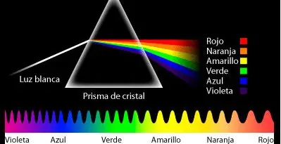
El color es una construcción cerebral. Los objetos absorben ciertas longitudes de onda y reflejan otras. Por ejemplo, una manzana roja absorbe todos los colores excepto el rojo, que rebota hacia tu ojo. Sin luz, no existe el color.
Se produce mediante la dispersión refractiva. Cada gota de agua actúa como un prisma: la luz entra, se refleja en la pared interna de la gota y sale descompuesta en sus siete colores fundamentales debido a que cada color viaja a una velocidad distinta dentro del agua.
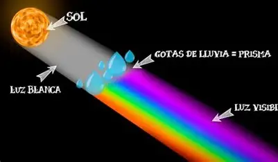
Nuestros ojos traducen energía electromagnética en señales eléctricas que el cerebro interpreta como imágenes.
La córnea y el humor acuoso desvían la luz para que pase por el centro de la pupila.
El cristalino cambia su forma para enfocar objetos a diferentes distancias sobre la retina.
Bastones: 120 millones de células para visión nocturna.
Conos: 6 millones para detalle y color (RGB).
El cerebro invierte la imagen (que llega al revés) y fusiona la visión de ambos ojos.
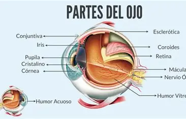
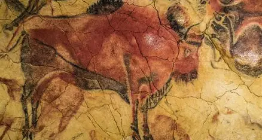
El arte parietal usaba pigmentos minerales aglutinados con grasa animal. El rojo simbolizaba la vida y la sangre.
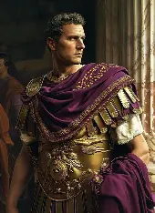
Pigmentos de Lujo.
La Púrpura de Tiro requería miles de moluscos para un gramo de tinte, haciéndola más cara que el oro.
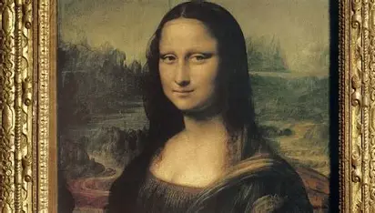
Aparece la perspectiva atmosférica y el claroscuro. El color se usa para guiar el ojo del espectador hacia el punto de fuga.
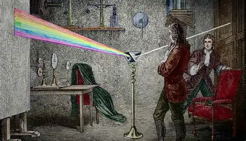
La física del color. Newton probó que la oscuridad no es un color, sino la ausencia total de luz.
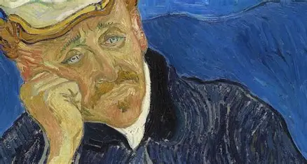
Goethe desafía a Newton enfocándose en la percepción psicológica: cómo los colores nos hacen sentir emociones.
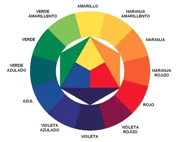
La Bauhaus define el diseño moderno. Se establecen los contrastes de temperatura (frío/cálido) y saturación.
Es la herramienta esencial para artistas y diseñadores. Permite identificar de inmediato colores complementarios (opuestos) para crear impacto visual o análogos (adyacentes) para crear serenidad.
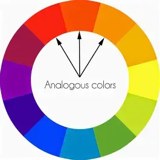
Uso de 3 colores seguidos. Transmite fluidez y calma en el diseño.
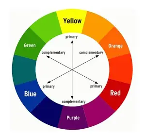
Máxima tensión visual. Ideal para resaltar botones o elementos clave.
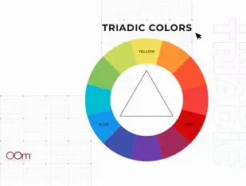
Tres colores a 120°. Ofrece una paleta vibrante pero equilibrada.